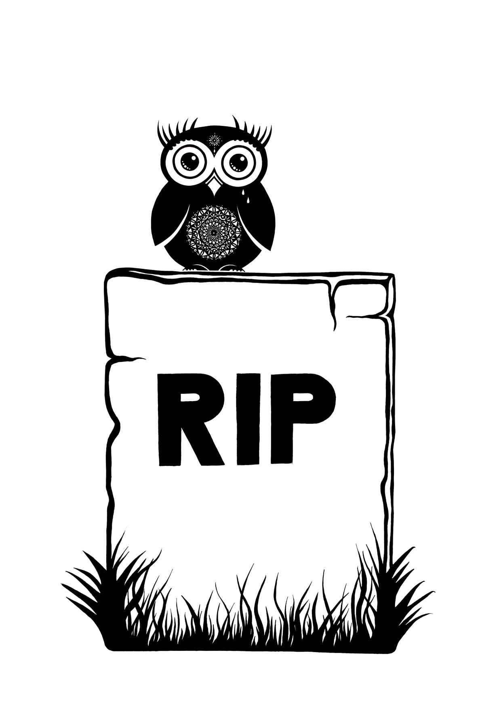

Why Are We
Doing This?

Because we’re tired of watching opioid and heroin addiction cripple and kill our friends and loved ones.
Because we’re tired of watching tragedy unfold through the collateral damage that addiction causes within families and communities.
We’re doing this because we’re outraged that human beings are dying in large numbers over profit-seeking in the cyclical feedback loop between the pharmaceutical industry, private industry, and rapidly ballooning rehab industry.
Because
7.7 million Americans are currently living with an illicit drug use disorder,
according to the most recent report from the US Surgeon General’s office.
Because in 2014,
nearly 2 million Americans
either abused or were dependent on prescription opioid pain relievers.
Because Overdose deaths now account for
more unintentional fatalities every year than automobile accidents.
Because each day,
more than 1,000 people are treated in emergency departments
for misusing prescription opioids.
Because
those ages 18-25 are the most affected demographic.
In 2014 nearly 1,700 died from prescription drug overdoses (mainly opioids).
Because the rate of heroin-related overdose deaths
QUADRUPLED between 2002 and 2015.
Because between 2002 and 2015 there was a
6.2 fold increase
in the total number of heroin related deaths.
Because
67% of heroin users
who are revived by Narcan will use heroin again within the next 24 hours.
Because although it’s impossible to approximate, most medical professionals agree that
between 40-60% of all substance-abuse patients
who go through ‘rehabilitation’ relapse.
Because we're
angry.
Because we've
lost friends.
Because we've
lost loved ones.
Because it needs to
STOP.